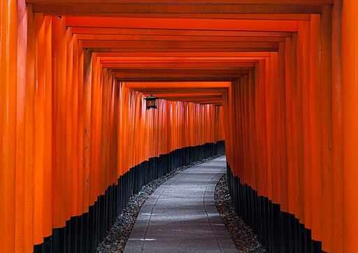

Home
Actualité
Bibliotheque
Incontournables
Catégorie
Article

[Article à la une]
Les bibliothèques japonaises : un voyage à travers l’histoire et le savoir...
[Actualité Récente]
Une bibliothèque souterraine appelée "Library in the Earth" a ouvert c'est porte à Kisarazu au Japon. Elle est...